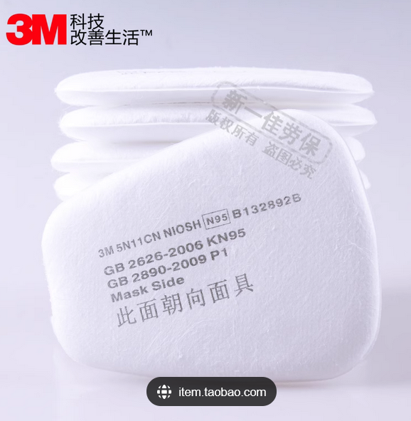
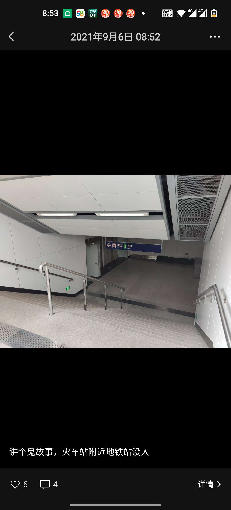

我的生平（十一）
关于疫情我的回忆
我自认为是一个运气很好的人。
在成都
2019年，因为实习工作，我在学校外租了个单间。一个月几百块钱。
2019年12月8日。那个时候疫情就来了。我想回学校，但是辅导员告诉我，不可以回学校。
没过多久，然后我住的小区就封锁了。每家每户只能几天出一次门，同时只有一个人能出门、不能结伴。
所有的网购平台和药店，都买不到口罩。
那个时候我没有口罩，只能网购了一个防毒面具。最好笑的是，我虽然有防毒面具，但我没有滤芯。

还是在买菜的时候，有个女生提醒我，我才知道。她也带着防毒面具，不过她的是齐全版，我的是残废版。
残废版，也就是说。我的防毒面具完全没有防新冠的作用。但是呢，它有让我出小区大门的作用。
戴上它，路人和保安就知道我戴了口罩。
虽然没有用，但是你就说我戴没戴吧？
我那时候一直在看动漫。我还能想起来，看的是《奇幻贵公子》又名《Ghost Hunt》、《吸血鬼骑士》、《为了女儿，我说不定连魔王都能干掉》……
对了，我最喜欢的声优是冈本信彦，他的声音实在太好听了呜呜呜。
哎，我那时候要是多学一点英语，把雅思考出来就好了。
虽然我一直买不到口罩，但我也没得新冠。
学校一直不通知开学，于是我只能把租的房子退了，然后回老家。
在湖南
于是在没有指导老师的情况下，我在老家开始写毕业论文。
有人可能会问，为什么会没有指导老师。当时一个班，一个指导老师负责指导几个学生。
但刚好指导我的那个老师，他特别佛系。你给他发消息，他是不会回的。
拜他所赐，我差点毕不了业。
大四还有体育课，但我们又没办法回学校。只好远程上体育课。
并且还有形势与政策的课程，也是远程通过电脑开会。
在成都
最终还是舍友看不下去了，给我发了一些PDF，我才知道关于毕业论文格式的如何修改。
实在必须不得不回学校了，不然没有毕业答辩，就毕不了业。
学校大发善心，让我们进了校园参加答辩。
我的答辩就是一坨大便。我自告奋勇的排在第一个去答辩。因为画室不开放，我不得不用以前的作品冒充”毕业创作“。
我的毕业创作主题是“前方的路”，有一幅画，画了一个金发的小女孩。我说这个小女孩代表我自己。
结果老师问，为什么我内心的自己是金头发，而不是黑色的头发。我怎么回答的已经忘记了，只记得当时很尴尬，总不能说因为疫情，我没画毕业创作吧？
还是因为疫情，画室关闭了。于是我必须得找画室老师做担保，才可以把我的画材和画带走。
学校发了口罩，我们在提交毕业论文以及等待拿毕业证的时间段，只能呆在宿舍里哪里也不许去。
哪里也不许去，就和坐牢一样。我拜托同学帮我拿毕业证，写了一个离校申请。离校申请也就是说，离开学校再也不会回来的那种。学校只能出不能进。
然后就去了深圳。
在深圳
深圳一切如常。没有封城，不用做核酸，也不用戴口罩。
一直到我离开深圳为止，都还是这样。
在南京
我换了一份工作，到南京做安全服务。
那个时候关于新冠的关键词就是奥密克戎。小区楼下贴满了公告，要小心奥密克戎。
1 | |
那个时候，一封控，我就请假；一封控，我就请假，但是工资照拿。
在家的时候我就渗透、挖洞、学免杀、搞培训。

南京市中心火车站地铁空空荡荡的。

在我离开南京之前的一小段时间，每天都需要排队去做核酸。这让我很不耐烦。但没想到，这只是个开始。
在天津
天津真是个热情好客的城市，让我隔离着来，隔离着走。
差一点去了方舱。
火车站门口，有很多很多小帐篷，工作人员根据从哪里来，决定是否要送去方舱。
因为没对好口供，我实话实说来自高风险地区。虽然我的核酸是绿码阴性，但我不得不去去方舱。除非我有地方隔离15天。
于是我联系了房东、无接触地拿到了钥匙。那个房子的钥匙藏在了某个街上的消防栓柜子里……
于是我填写了房东租给我的房子的地址。自行隔离了15天。
疫情一阵一阵的，好坏反复，总也灭不了。
总有人乐观的认为，只要我们万众一心、听从指挥，就可以完全消灭新冠病毒。
新冠病毒给我的生活带来了不少麻烦，但幸运的是没有灾难性的影响。
在2022年12月，我失业了，新冠也放开了。好消息是，我不用上班了。不用上班就不用接触人群、也就降低得新冠的概率。
在我离开天津之前，疫情追到了我的楼下。我又被隔离了。
在我的小区，有新冠确诊案例，于是整个大楼，都不许进不许出。我的健康码也变成了红码。隔离期一过，我就离开了天津。
据我观察，在这段时间，新冠放开以后。 病毒就像压不住的火一样愈演愈烈，在北京如同过境的海啸，把每个人都传染了一遍。因此能活过2023年的这些人，都是身体素质经过自然选择的狠角色。
浪迹天涯
我去山东青岛、济南、曹县、安徽阜阳、江西南昌、湖北武汉、湖南长沙、广州市、香港……
至此
我失去了社交，也收获了自由。
我想去哪里，就去哪里。
想吃什么，就吃什么；
想玩什么，就玩什么；
新冠出现以来，我从未得过新冠。
感谢为疫情做出贡献的所有人。
深切缅怀因疫情逝去的所有人。